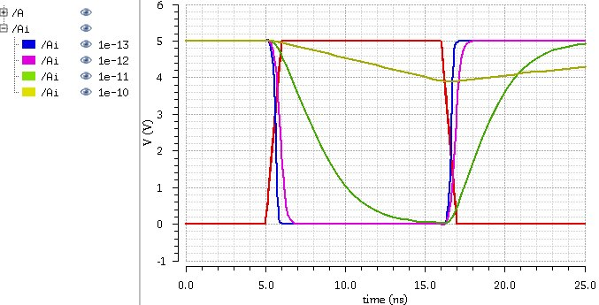

Lab 5 - EE 421L
Authored
by Martin Jaime,
email: jaimem5 at the UNLV students domain
October 5, 2016
Pre-lab work:
- Back-up all of your work from the lab and the course.
- Go through Tutorial 3 seen here.
Lab Report
- Draft schematics, layouts, and symbols for two inverters having sizes of:
- 12u/6u (= width of the PMOS / width of the NMOS with both devices having minimum lengths of 0.6u)
- 48u/24u where the devices use a multiplier, M = 4 (set along with the width and length of the MOSFET, image), as seen below
Schematic, Symbol, and Layout of 12u/6u inverter
|
|
|
|
The schematic passes DRC
|
The layout passes LVS
|
|
|
- The following, are simulations of the inverter driving a 100 fF,
1 pF, 10 pF, and 100 pF capacitive load. To avoid running multiple
simulations, the capacitive load was parameterized with the following
settings and schematic for the 12u/6u inverter:
Spectre Simulations
|
UltraSim Simulations
|
|
|
Spectre Simulations
|
UltraSim Simulations
|

|
|
- We can see similar responses in both inverters. The larger the
capacitive load, the slower the response time. The input (red) is a
pulse going from 0 V to 5 V, and back to 0 V. When the input changes from logic "0" to logic "1", the
output tries to switch to the opposite. for the larger capacitive loads
that were greater 10 pF, the delay was the most significant.
- However, by increasing the channel width, the current sourced
through the inverter can increase. By increasing the current, the
capacitive load can be charged faster, and thus, respond faster to the
same loads as before. We can see though, that with the loads greater
than 10 pF are significantly slower.
All backed up work can be found at https://github.com/martinjaime/CMOSedu-Reports
EE421L Lab Student Listing | My Lab Directory | EE421 Home Page
{kind=link}

{kind=link}